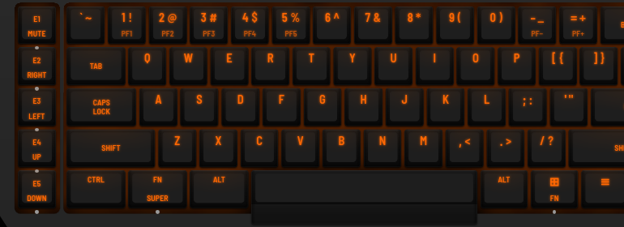
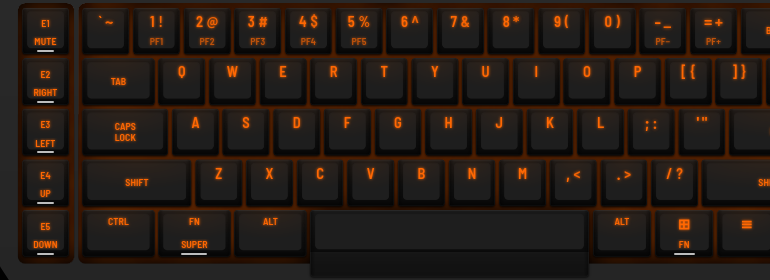
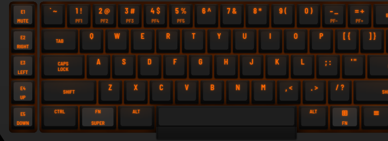
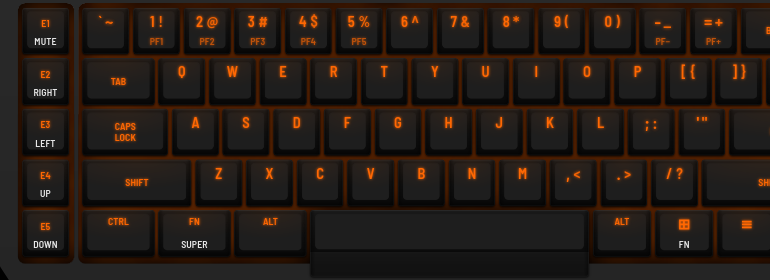
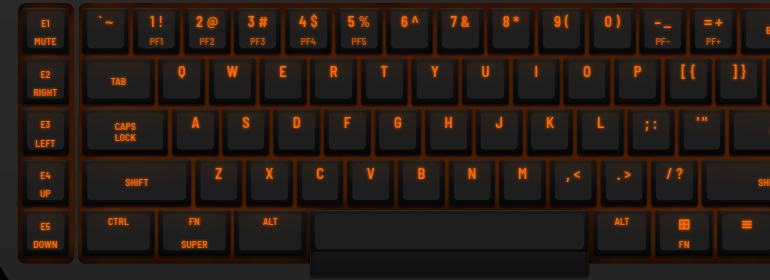

Edited keys: ten ways to mark them
Your seven edited keys (E1 to E5, Fn and the Windows key), each drawn by WebKit exactly as Ectodeck draws the board. Every one is a single small mark or none at all. The chosen key keeps its white edge in all of them.

01No markThe new meaning printed at the foot of the cap already says the key is changed. Nothing else is added.
02A dot in the cornerA small grey dot at the top right of the cap.

03A dot on the deckA small dot on the keyboard just below the key, off the cap, like a status light.

04A short lineA short grey line along the cap's front edge.
05A folded cornerA small grey triangle in the top right corner, the way spreadsheets mark a cell with a note.

06A lighter capThe edited cap's top is a shade lighter than the rest.

07The new meaning in whiteNo mark. The new meaning at the foot of the cap is printed in white instead of the backlight's colour.
08Only while pointing at the keyboardThe board shows no marks until the pointer is over it; then the corner dots of 02 appear.
09Only when askedA switch beside the profiles, off by default, turns the corner dots of 02 on.

Changed on this profile: E1, E2, E3, E4, E5, Fn, Windows
10A list instead of marksNothing on the board. One line under it names the changed keys; clicking a name chooses that key.